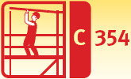
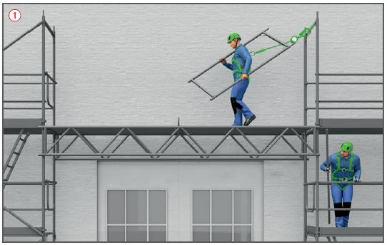
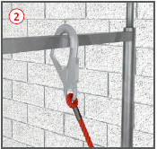

Gerüstbauarbeiten Persönliche Schutzausrüstungen gegen Absturz (PSAgA)


Gefährdungen
Bei der Benutzung, Nichtbenutzung und/oder fehlerhaften Anwendung der PSAgA können schwerste Unfälle auftreten, z. B. durch Absturz, Anprallen, Sturzfolgen.
Schutzmaßnahmen
PSAgA nur dann benutzen, wenn im Einzelfall aus arbeitstechnischen Gründen Absturzsicherungen (z. B. Seitenschutz) und Auffangeinrichtungen (z. B. Schutznetze) nicht angewendet werden können .
Nur CE-gekennzeichnete und zugelassene baumuster-geprüfte Ausrüstung verwenden, bestehend z. B. aus
Auffanggurt,
Verbindungsmittel,
Falldämpfer,
geeignete Verbindungselemente mit automatischer Verschlusssicherung.
Die Verwendung von PSAgA erfordert in jedem Fall die Benutzung eines Schutzhelms mit Kinnriemen, der mit einer Festigkeit von bis zu 25 daN (DIN EN 397:2013-04) ausgestattet ist.
Benutzung
PSAgA nur an geeigneten und nachgewiesenen Gerüstbauteilen befestigen (siehe Aufbau- und Verwendungsanleitung des Gerüstherstellers), z. B. bei Stahlrohrgerüsten am Außen- bzw. Innenstiel oder am Geländerholm.
PSAgA sollte mindestens in Geländerholmhöhe oder oberhalb des Benutzers angeschlagen werden.
Nur Verbindungselemente (z. B. Rohrhaken) benutzen, die eine Sicherung gegen unbeabsichtigtes Öffnen haben.
Auffangsysteme mit energieabsorbierender Funktion oder Falldämpfer benutzen.
Der Einsatz von Höhensicherungsgeräten hat den Vorteil, dass eine Schlaffseilbildung verhindert und die Sturzstrecke reduziert wird.
Die Verbindungsmittel nicht über scharfe Kanten beanspruchen, nicht knoten und nicht behelfsmäßig verlängern.
PSAgA vor schädlichen Einflüssen, z. B. Öl, Funkenflug, Erwärmung über 60° schützen und trocken lagern.
Beschädigte oder durch Sturz beanspruchte PSAgA nicht weiter verwenden. Sie ist der Benutzung zu entziehen und von einem Sachkundigen zu prüfen.

Zusätzliche Hinweise zur Rettung (Rettungskonzept)
Vor Beginn der Gerüstbauarbeiten Maßnahmen zur Rettung festlegen.
Rettungsgeräte und Einrichtungen (z. B. Abseilgeräte) festlegen und ortsnah bereitstellen.
Zur Rettung müssen mindestens zwei weitere Gerüstersteller PSAgA angelegt haben.
Längeres bewegungsloses Hängen im Gurt kann zu Gesundheitsschäden führen. Eine schnellstmögliche Rettung ist erforderlich.
Rettungsgeräte regelmäßig auf ihre Funktionsfähigkeit prüfen.
Unterweisung
Beschäftigte vor der ersten Benutzung und nach Bedarf, mindestens jedoch einmal jährlich unterweisen. Dies ist für die PSAgA und die Rettungsausrüstung mit praktischen Übungen anhand des jeweils eingesetzten Systems und den jeweiligen Umgebungs- und Arbeitsbedingungen durchzuführen.
Inhalte der Gebrauchsanleitung des PSAgA-Herstellers, der Aufbau- und Verwendungsanleitung des Gerüstherstellers sowie der vom Unternehmer erstellten Betriebsanweisung in die Unterweisung einbeziehen.
Prüfungen
PSAgA im Gerüstbau vor jeder Benutzung durch Inaugenscheinnahme einer sachkundigen Person kontrollieren.
Prüfung durch einen Sachkundigen nach Bedarf, mindestens jedoch einmal jährlich. Die Prüfung ist zu dokumentieren.